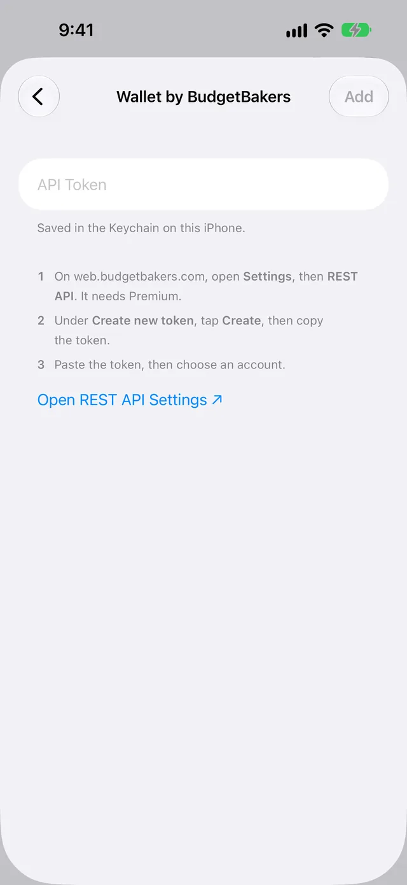
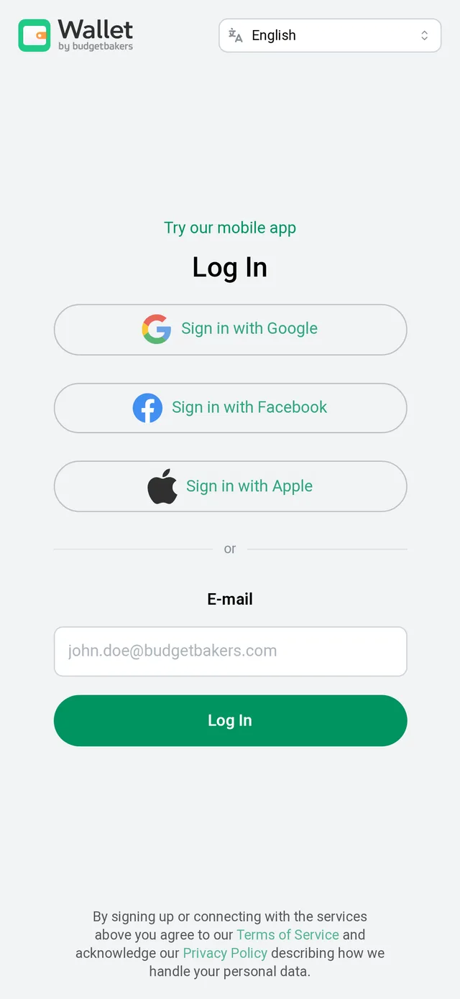
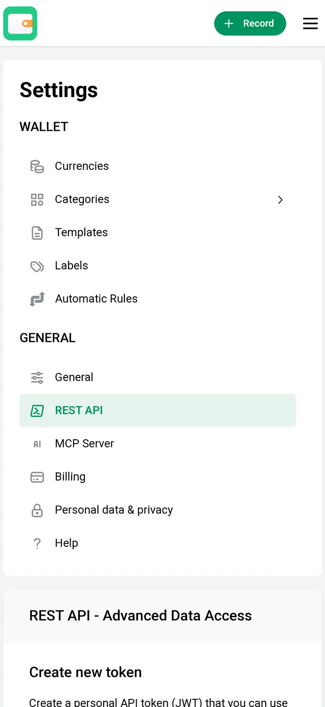
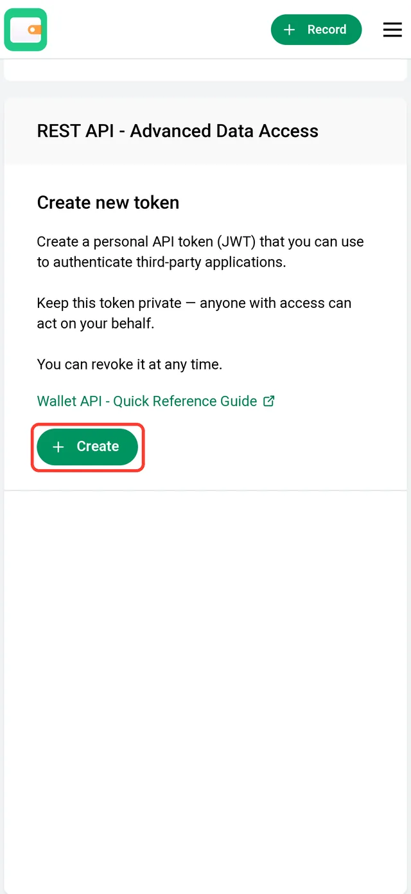

Send Apple Card transactions to Wallet by BudgetBakers
WalletFeed sends your Apple Card, Apple Cash and Savings transactions from your iPhone to Wallet by BudgetBakers. You make an API token in Wallet by BudgetBakers, then you paste the token in WalletFeed.
On this page, "Wallet by BudgetBakers" is the budget app from BudgetBakers. "Wallet" without "by BudgetBakers" is the Wallet app on your iPhone.
Before you start
You must have these items:
- An iPhone with iOS 26 or a newer version. WalletFeed is available only in the US.
- WalletFeed on your iPhone, with access to your Apple Card, Apple Cash or Savings account.
- WalletFeed Pro (a subscription with a 1-week free trial, or a one-time Lifetime purchase). You must have WalletFeed Pro to send transactions to Wallet by BudgetBakers.
- A Wallet by BudgetBakers account with Premium. BudgetBakers gives API tokens only to accounts with Premium.
Your token stays on your iPhone
- WalletFeed keeps the API token in the Keychain on your iPhone. iOS encrypts the Keychain.
- The API token does not go to iCloud Keychain or to your other devices.
- WalletFeed has no account and no servers. No person at WalletFeed can see or get the API token.
- Your iPhone sends the API token only to BudgetBakers, in each request to BudgetBakers.
- When you delete the destination, WalletFeed deletes the API token from your iPhone. You can also delete the token in Wallet by BudgetBakers.
Step 1: Open the Wallet by BudgetBakers form in WalletFeed
-
On your iPhone, open WalletFeed.
-
Tap Destinations.
-
Tap + at the top of the screen.

-
In the search field, type
BudgetBakers. -
Tap Wallet by BudgetBakers.
-
If WalletFeed shows WalletFeed Pro, get WalletFeed Pro.
Result: After you get WalletFeed Pro, WalletFeed shows the Wallet by BudgetBakers form.

Step 2: Make an API token in Wallet by BudgetBakers
The REST API page in Wallet by BudgetBakers tells you not to give the token to a different person. A person with the token can use your account. The page also tells you that you can use the token with "third-party applications". For information about the token in WalletFeed, refer to Your token stays on your iPhone.
- With the token, WalletFeed gets the list of your accounts in Wallet by BudgetBakers and can make an Apple Card account. WalletFeed also adds, changes and deletes the records that it sends.
- You can delete the token in Wallet by BudgetBakers (refer to Delete the token in Wallet by BudgetBakers).
To make the token on your iPhone, do these steps:
-
In the Wallet by BudgetBakers form, tap Open REST API Settings.
Result: Your web browser opens Wallet by BudgetBakers.
-
If Wallet by BudgetBakers shows Log In, type the e-mail address of your Premium account in E-mail.
If you type a different e-mail address, Wallet by BudgetBakers makes a new account. If you use Sign in with Apple, Sign in with Google or Sign in with Facebook, tap that button. Then do step 6.

-
Tap Log In.
Result: Wallet by BudgetBakers shows "Verification email was sent". BudgetBakers sends you an e-mail with the subject "Sign In to the Wallet application".
-
On the same iPhone, open the e-mail from BudgetBakers.
The e-mail gives you access only on this iPhone, in the web browser that you used in step 3.
-
Tap Sign in to the Wallet application.
-
Scroll to Create new token.
At the top of the page, Wallet by BudgetBakers shows the Settings list. Create new token is below the list.

-
Tap Create.

If you do not have Premium, Wallet by BudgetBakers shows "Upgrade to premium" and "to unlock API access". You cannot make a token on the Free plan.
-
If Wallet by BudgetBakers shows a field for the name of the token, type
WalletFeed. -
Copy the token.
Make sure that you copy all of the token.
Step 3: Paste the token in WalletFeed
-
Open WalletFeed again.
-
If WalletFeed does not show the Wallet by BudgetBakers form, do Step 1 again.
-
Touch and hold API Token.
-
Tap Paste.
Result: WalletFeed connects to Wallet by BudgetBakers with the token. Then WalletFeed shows Account.
-
In Account, select the account that receives your transactions.
If Wallet by BudgetBakers has an account with the name Apple Card, WalletFeed selects that account. If it has no account with that name, WalletFeed selects New Apple Card Account. With New Apple Card Account, WalletFeed makes a General account in US dollars with the name Apple Card.
Account shows only accounts in US dollars that have no bank connection. WalletFeed can change the records only in these accounts.
-
Tap Add.
Result: WalletFeed shows Send Transactions to Wallet by BudgetBakers? The message tells you the data that Wallet by BudgetBakers receives, the Wallet accounts and the start date. If you tap Cancel, WalletFeed does not add the destination.
-
Tap Send.
Result: WalletFeed starts to send your transactions to Wallet by BudgetBakers. In Destinations, the name of the new destination starts with "Wallet by BudgetBakers ·", for example "Wallet by BudgetBakers · Apple Card".
Step 4: Find the transactions in Wallet by BudgetBakers
- On a computer, open the Wallet by BudgetBakers web app.
- Click Accounts at the top of the page.
- Open the Apple Card account, or the account that you selected in WalletFeed.
Each record from WalletFeed has wf: and an ID at the end of its note. You can also find the records in the Wallet by BudgetBakers app on your iPhone.
Data that Wallet by BudgetBakers receives
WalletFeed adds each transaction as a record in the account that you selected. This account also receives the transactions from your other Wallet accounts, for example Apple Cash. To select the Wallet accounts, refer to Send only some transactions.
| From Wallet | In Wallet by BudgetBakers |
|---|---|
| The merchant name, or the description if there is no merchant name | The payee |
| The amount, negative for a purchase and positive for a refund | The amount |
| The currency, US dollars | The currency |
| The date and time of the transaction | The date and time |
| Pending or posted | The state: uncleared while pending, cleared when the charge becomes posted |
| The card statement text, if it is different from the merchant name | The start of the note |
wf: and the ID of the transaction in Wallet |
The end of the note |
Wallet by BudgetBakers receives no category. It shows each new record in the Unknown category. You can give each record a category in Wallet by BudgetBakers.
After WalletFeed sends a transaction, WalletFeed changes only the amount, the date and the state. WalletFeed changes the state only from uncleared to cleared. If you change the state of a record to reconciled, WalletFeed does not change the state. Your changes to the payee, the note, the category and the labels stay.
Wallet by BudgetBakers does not accept an amount of $0.00. Thus, WalletFeed does not send a transaction of $0.00. If the amount of a transaction changes to $0.00, WalletFeed deletes its record.
New and changed transactions
While WalletFeed is open, Wallet by BudgetBakers receives changes in seconds. When WalletFeed is not open, iOS starts WalletFeed approximately 1 hour or less after a change in Wallet. If Background Sync is on in Settings › Sync, WalletFeed then sends the change.
Wallet by BudgetBakers also receives pending charges, with the state uncleared. When a pending charge becomes posted, WalletFeed changes the amount, the date and the state of the same record. To send only posted charges, you can set Filter to on and Include Pending to off (refer to Send only some transactions).
WalletFeed deletes a declined charge from Wallet by BudgetBakers. WalletFeed also deletes a transaction that Wallet removes. Wallet by BudgetBakers receives a refund as a different record with a positive amount.
Send previous transactions
A new destination also receives previous transactions from the start date in Settings › Sync › Initial History. Initial History is All until you change it. If you change Initial History before you add Wallet by BudgetBakers, the new destination receives transactions from the new start date.
To send previous transactions after you add Wallet by BudgetBakers, do these steps:
-
In Destinations, tap the Wallet by BudgetBakers destination.
-
Tap Send History.
-
Tap 30 Days, 90 Days, 1 Year or All.
Result: WalletFeed shows Sending History and the number of transactions that it sent.
-
To stop WalletFeed before it sends all of the transactions, tap Send History › Stop Sending.
BudgetBakers accepts 300 requests in each hour. Requests from your other apps that use the token, and requests to the MCP Server, are part of the same 300. Thus, WalletFeed sends 100 previous transactions, then waits 5 minutes before it sends more. WalletFeed sends approximately 1,100 previous transactions in each hour.
Send History does not add a transaction two times. WalletFeed finds each record by the wf: text in its note. If the amount or the date is different, WalletFeed changes the record that it finds. If you deleted a record in Wallet by BudgetBakers, Send History adds the transaction again. If you changed the date of a record by more than 3 days, Send History also adds the transaction again.
For more information, refer to Send previous transactions.
Change or remove the destination
You change the Wallet by BudgetBakers destination on its screen in Destinations. For more information about this screen, refer to Destinations.
Send only some transactions
-
In Destinations, tap the Wallet by BudgetBakers destination.
-
Set Filter to on.
-
Change Include, Minimum, Include Pending, Accounts, Categories or Exclude.
In Accounts, you select the Wallet accounts for Wallet by BudgetBakers. With Apple Intelligence, you can also type a rule in words, for example "Travel over $50, not Uber", and tap the Apple Intelligence icon.
For more information, refer to Filter the transactions for a destination.
Stop the destination for a time
-
In Destinations, tap the Wallet by BudgetBakers destination.
-
Set Enabled to off.
Until you set Enabled to on again, WalletFeed does not send transactions to Wallet by BudgetBakers.
Replace the token
If you deleted the token in Wallet by BudgetBakers, or if BudgetBakers does not accept the token, do these steps:
-
Make a new token in Wallet by BudgetBakers (refer to Step 2).
-
Open WalletFeed again.
-
In Destinations, tap the Wallet by BudgetBakers destination.
-
Tap Replace Token.
-
Touch and hold API Token.
-
Tap Paste.
-
Tap Replace.
Result: Before WalletFeed puts the new token in the Keychain, WalletFeed connects to the account of the destination with the token. Then Replace Token shows a green checkmark.
Remove Wallet by BudgetBakers from WalletFeed
-
In Destinations, tap the Wallet by BudgetBakers destination.
-
Tap Delete.
-
Tap Delete again.
Result: WalletFeed removes the destination and deletes the token from your iPhone. The records that WalletFeed sent stay in Wallet by BudgetBakers. Until you delete the token in Wallet by BudgetBakers, BudgetBakers accepts the token.
Delete the token in Wallet by BudgetBakers
The REST API page tells you "You can revoke it at any time."
- On a computer, open the REST API page of Wallet by BudgetBakers.
- Delete the token that you made for WalletFeed.
After you delete the token, the destination in WalletFeed shows "Authentication failed" when WalletFeed tries to send transactions. To send transactions again, you must make a new token and replace the token in WalletFeed.
If there is a problem
To make sure that WalletFeed can send transactions to Wallet by BudgetBakers, do these steps:
-
In Destinations, tap the Wallet by BudgetBakers destination.
-
Tap Send Test.
Result: If Wallet by BudgetBakers receives the test transaction, WalletFeed shows a green checkmark.
If WalletFeed shows "Token rejected"
BudgetBakers does not accept the token, for example because you copied only a part of the token. WalletFeed then shows "Token rejected (HTTP 401). Generate a new one in Wallet by BudgetBakers." The message can also show HTTP 403.
- Make a new token in Wallet by BudgetBakers (refer to Step 2).
- Open WalletFeed again.
- Touch and hold API Token.
- Tap Paste.
If the destination shows "Authentication failed"
BudgetBakers does not accept the token of the destination, for example because a person deleted the token.
- Make a new token in Wallet by BudgetBakers (refer to Step 2).
- Replace the token in WalletFeed (refer to Replace the token).
If WalletFeed shows "Wallet by BudgetBakers needs Premium for API access"
Your Premium plan in Wallet by BudgetBakers is not active. BudgetBakers accepts API tokens only from accounts with Premium.
- On a computer, open the Wallet by BudgetBakers web app.
- Click your name at the top right.
- Click Settings.
- Click Billing.
- Click Upgrade to premium.
- Get one of the Premium plans.
- If WalletFeed shows "Wallet by BudgetBakers needs Premium and API access turned on.", activate API access (refer to API access is off).
When BudgetBakers accepts the token again, WalletFeed sends the transactions that it did not send.
If WalletFeed shows "API access is off in Wallet by BudgetBakers"
BudgetBakers does not accept API tokens until you activate API access in the Wallet by BudgetBakers web app.
- On a computer, open the REST API page of Wallet by BudgetBakers.
- Activate API access.
If WalletFeed shows "This token is for Board"
You made the token in Board, a different app from BudgetBakers. A token from Board does not give access to Wallet by BudgetBakers.
- Make a token in Wallet by BudgetBakers (refer to Step 2).
- Open WalletFeed again.
- Touch and hold API Token.
- Tap Paste.
If WalletFeed shows "Wallet by BudgetBakers is still preparing your data"
After you make your first token, BudgetBakers prepares your data for the API. Until BudgetBakers completes this task, it does not accept requests.
- Wait approximately 5 minutes.
- In the Wallet by BudgetBakers form, delete the text in API Token.
- Touch and hold API Token.
- Tap Paste.
If Account does not show your account
Account shows only accounts in US dollars that have no bank connection. WalletFeed then shows "Lists accounts in US dollars that aren't connected to a bank."
- In Account, select New Apple Card Account or a different account.
- Tap Add.
If Wallet by BudgetBakers shows a transaction two times
WalletFeed did not find the first record, because the wf: text in its note changed.
- In Wallet by BudgetBakers, find the record that has no
wf:text in its note. - Delete that record.
If Wallet by BudgetBakers receives transactions only while WalletFeed is open
When Background Sync is off, WalletFeed sends transactions only while it is open.
- Tap the gear icon at the top of Destinations.
- In Settings › Sync, set Background Sync to on.
For more information, refer to Background Sync.
If WalletFeed shows "The transaction's currency isn't the account's"
The account in Wallet by BudgetBakers is not in US dollars. BudgetBakers accepts a record only in the currency of its account.
- Remove the destination (refer to Remove Wallet by BudgetBakers from WalletFeed).
- Add Wallet by BudgetBakers again, with an account in US dollars (refer to Step 1).
If WalletFeed shows "Wallet by BudgetBakers didn't create the account"
BudgetBakers did not make the Apple Card account when you tapped Add.
- Tap Add again.
- If WalletFeed shows the message again, make an account with the name Apple Card in US dollars in Wallet by BudgetBakers.
- In WalletFeed, delete the text in API Token.
- Paste the token again.
- In Account, select Apple Card.
If the destination shows "Rejected (HTTP 400)" or "Server error (500)"
BudgetBakers did not accept some records. WalletFeed keeps these transactions and sends them again.
- Wait until WalletFeed tries again.
- If the destination shows the message again after 1 day, tap Send Test on the destination screen.
- If Send Test shows a message, do the steps for that message on this page.
If WalletFeed shows "The account is gone from Wallet by BudgetBakers"
A person deleted the account that the destination uses. WalletFeed shows "The account is gone from Wallet by BudgetBakers. Add this destination again."
- Remove the destination (refer to Remove Wallet by BudgetBakers from WalletFeed).
- Add Wallet by BudgetBakers again (refer to Step 1).
If the destination shows "Too many requests"
BudgetBakers accepts 300 requests in each hour. Requests from your other apps that use the token, and requests to the MCP Server, are part of the same 300.
-
Wait until WalletFeed tries again.
Result: WalletFeed sends the transactions again. Send History waits for the time that BudgetBakers gives. WalletFeed does not add a transaction two times.
Related
Updated October 30, 2026